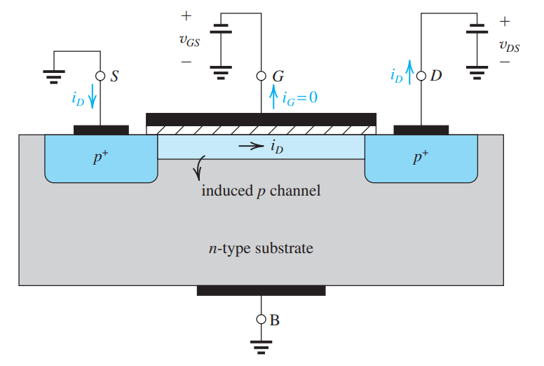

Transistor Capacitances
EEE 131 THX2/Y
2025-11-19
General Frequency Response
Most amplifiers have a frequency response that looks like the following: 
Everything is a capacitor
If something holds charge, it is a capacitor.
\[C = \frac{dQ}{dV} \]
Hence, everywhere in semiconductor devices where there are holes and electrons moving in and out there is capacitance.


BJT Small Signal Model with Capacitances

\[C\pi=C_b+C_{je}\] \[C_b=\tau_Fg_m\]
\[\frac{C_{je0}}{\sqrt{1 - V_{BE}/V_{j,BE}}}\]
\[ C_{\mu} = \frac{C_{\mu0}}{\sqrt{1 + V_{CB}/V_{j,CB}}} \]
Overlap Capacitances \(C_{GS}\) and \(C_{GD}\)
\(C_{GS}\) and \(C_{GD}\) are overlap capacitances caused by an effective MOS capacitor on the overlap of the G region to the S and D regions.
\[C_{GS} = C_{GD} = \frac{\epsilon_{ox} x_d W}{t_{ox}}\]
But if you may remember…
\[C_{ox}=\frac{\epsilon_{ox}}{t_{ox}}\]
\[C_{GS} = C_{GD} = C_{ox}x_dW\]

The Gate-bulk Capacitance \(C_{gb}\)

As we discussed before, the main physical device behind the MOSFET is a MOS capacitor.
\[ C_{gb} = \frac{\epsilon_{ox}}{t_{ox}}WL \]
The Drain-bulk and Source-bulk Capacitances \(C_{db}\),\(C_{sb}\)
\(C_{db}\) and \(C_{sb}\) come from junction capacitances of the PN junction formed by the opposite-type semiconductors of the drain/source and the bulk.